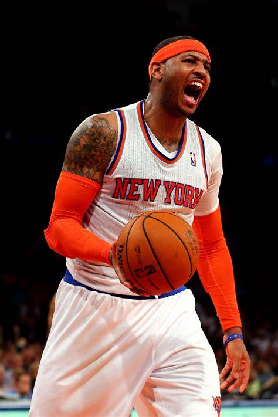

My first blog post will be about the first time I learned to program. I learned to program when I was in community college; the first language that I learned was Python. Python thought me the basics of programming, and I regard it as my favorite programming language! After I had learned Python I started to pick up on other languages in my free time, such as JavaScript and C++. What really helped me learn to program was codecademy.com, it is a very resourceful site for all things coding, and it's interactivity is what really made me a frequent visitor to codecademy.com. Once I made it to MSU, I continued my coding journey by taking classes like CSE 102 and CSE 231 and now taking MI 349. Coding is a great skill that I think should be something everyone should learn at some point in there lives. It can help improve logic and creativity, and it certainly helps improve your computer skills in a variety of ways, such as typing, file management, and of course programming.
Necessities To Code
Cost
Where To Buy
Computer
$400+
Amazon
Keyboard
$14.99
Best Buy
Mouse
$4.99
Target
My Interest in Basketball
by Chris

I've always had a deep passion for basketball. There is something about the game that captivates me. Whether it's playing on the court, watching a live game, or even talking about the sport with friends. I remember the first time I picked up a basketball, I was in the sixth grade; originally my interest in basketball started when I picked up my first NBA 2K video game. Although I was clumsy at first, I still played as much ball as I could. Playing basketball has taught me many valuable life lessons, it has instilled in me a sense of discipline, teamwork, and perseverance. One of my favorite aspects of basketball is the sense of community around the sport. Whether playing in a local league or just a casual pickup game, the camaraderie and sportsmanship are always evident. I've made many friends through basketball, and these connections have enriched my life in countless ways. Basketball is more than just a sport to me; it's a passion that continues to drive and inspire me. Every time I step onto the court, I'm reminded of why I fell in love with the game in the first place. It's a feeling that never gets old and one that I hope to carry with me for the rest of my life.